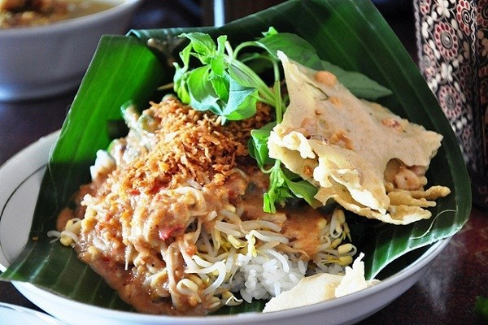
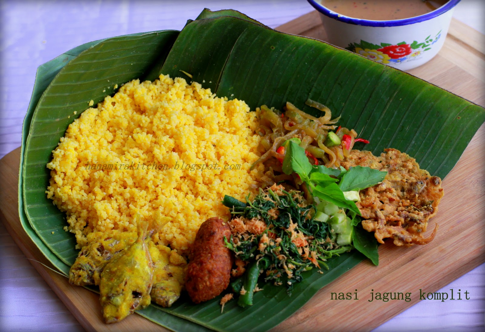
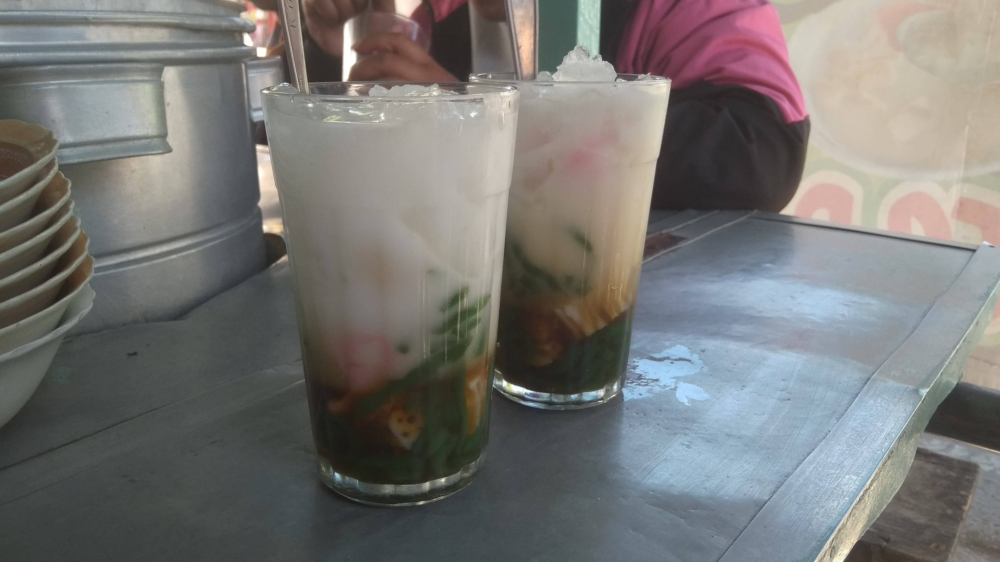
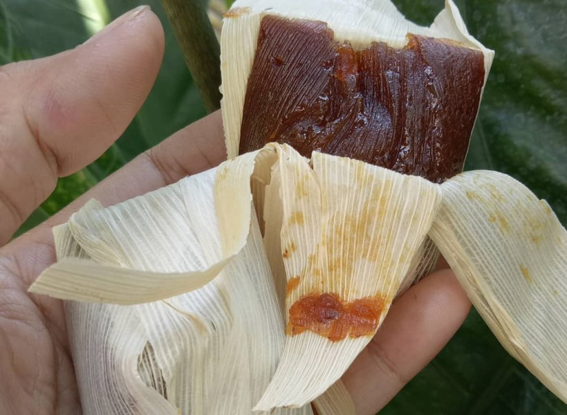
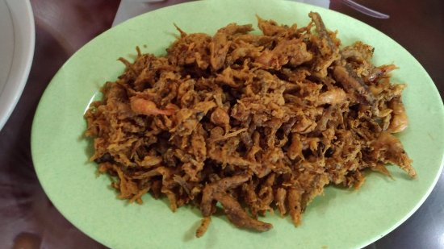

Blitar Pecel Rice
Although in terms of appearance it’s like the pecel that many Indonesian usually encounter, a matter of taste is certainly different. The taste of Blitar pecel is more savory and not too sweet. The nuts are also smoother so they have a soft texture. The aroma of lime leaves is strong enough that it will increase your appetite. The more delicious it is with the addition of anchovies and peanut brittle on top.
Ampok Rice
Ampok rice is a traditional one that has been around for a long time in Blitar. Ampok rice is corn rice which is used as a substitute for rice. This rice is juxtaposed with side dishes such as urap urap, salted fish, and lodeh vegetables. Usually, peyek also added to make it taste even more delicious.
Iced Pleret
Iced Pleret is a drink made from rice flour and served using ice. This drink is even more interesting with the addition of coconut milk and coconut milk which makes the taste even richer. The seller has now also innovated by adding more complete fillings such as fruit and others.
Wajik Klethik
Made from palm sugar, coconut and also thick rice, this food has a savory and sweet taste. To make it even more unique, it is wrapped in dry corn husks. What makes it even more interesting is that there is a unique chirping texture in the mouth.